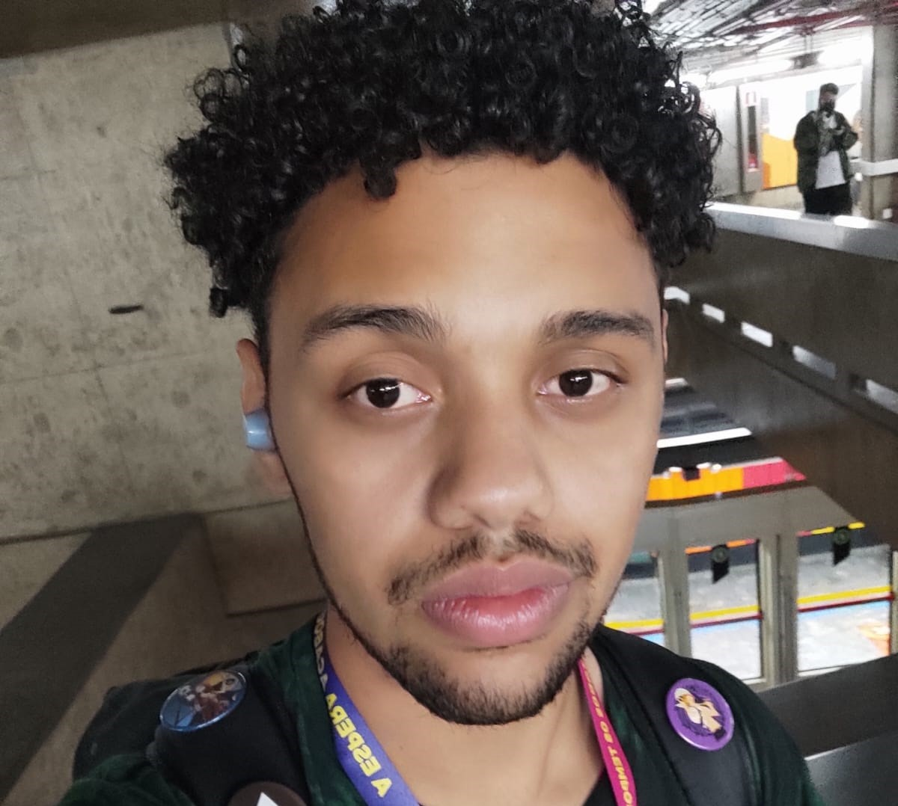
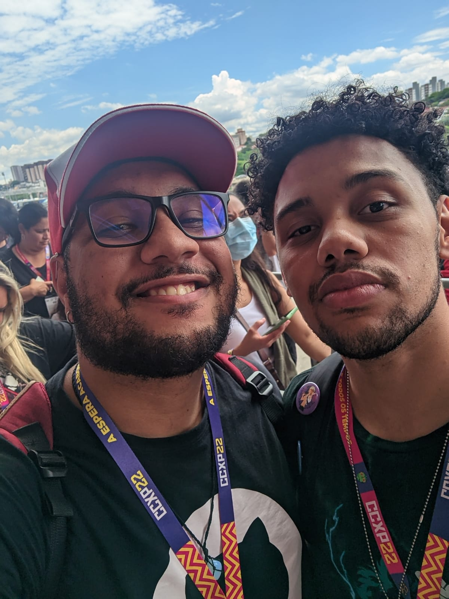
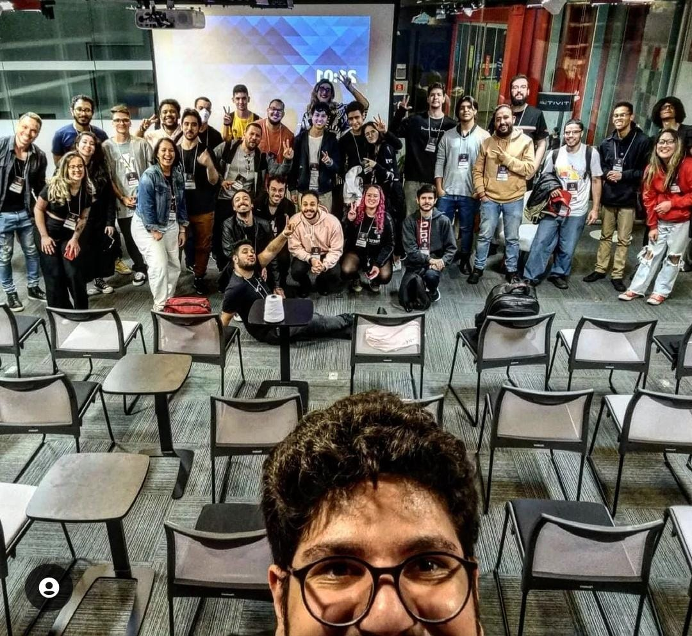
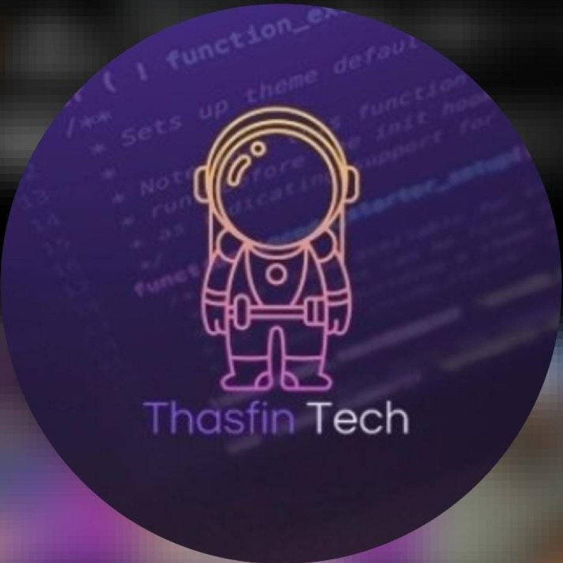

Como eu começei nesse mundo da Programação
That's me
Meu nome é Fernando Barros, a menos de um ano atrás eu nem sabia o que era programação.
My beginning
Esse é o meu irmão mais velho Filipe Barros(Jureg). Meu irmão foi a pessoa que me apresentou ao mundo dos Dev
Community
 No dia 20 de Janeiro de 2023, fui apresentado a comunidade da Thasfin Tech, uma comunidade maravilhosa que me ajudou e me ajuda muito até hoje.
A Thasfin Tech é uma comunidadede Devs, que foi criada para ajudar outros Devs e para ajudar vários tipos de pessoas, desde da pessoa que está migrando de área, quanto pessoa que estão começando agora no mundo tec, até mesmo pessoa que nem eu, que não sabiam para que direção iriam.